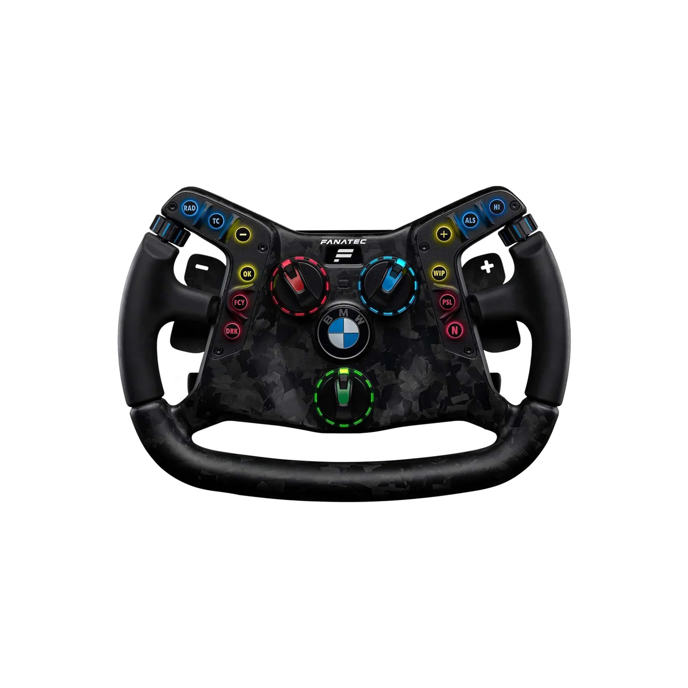
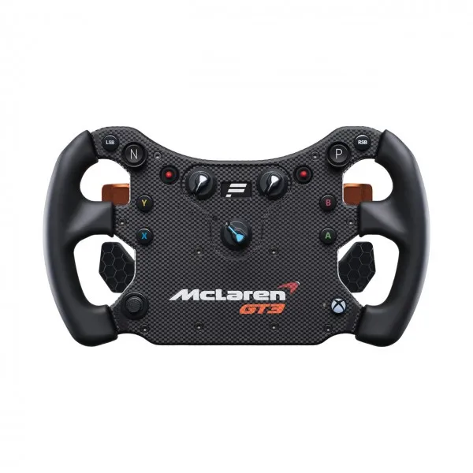
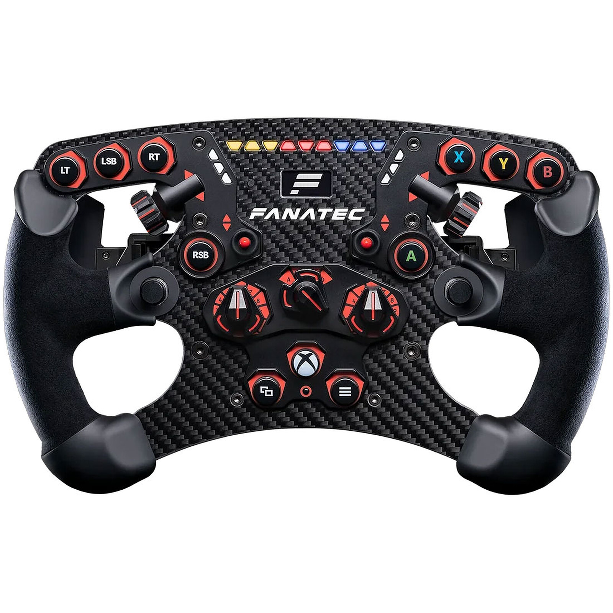
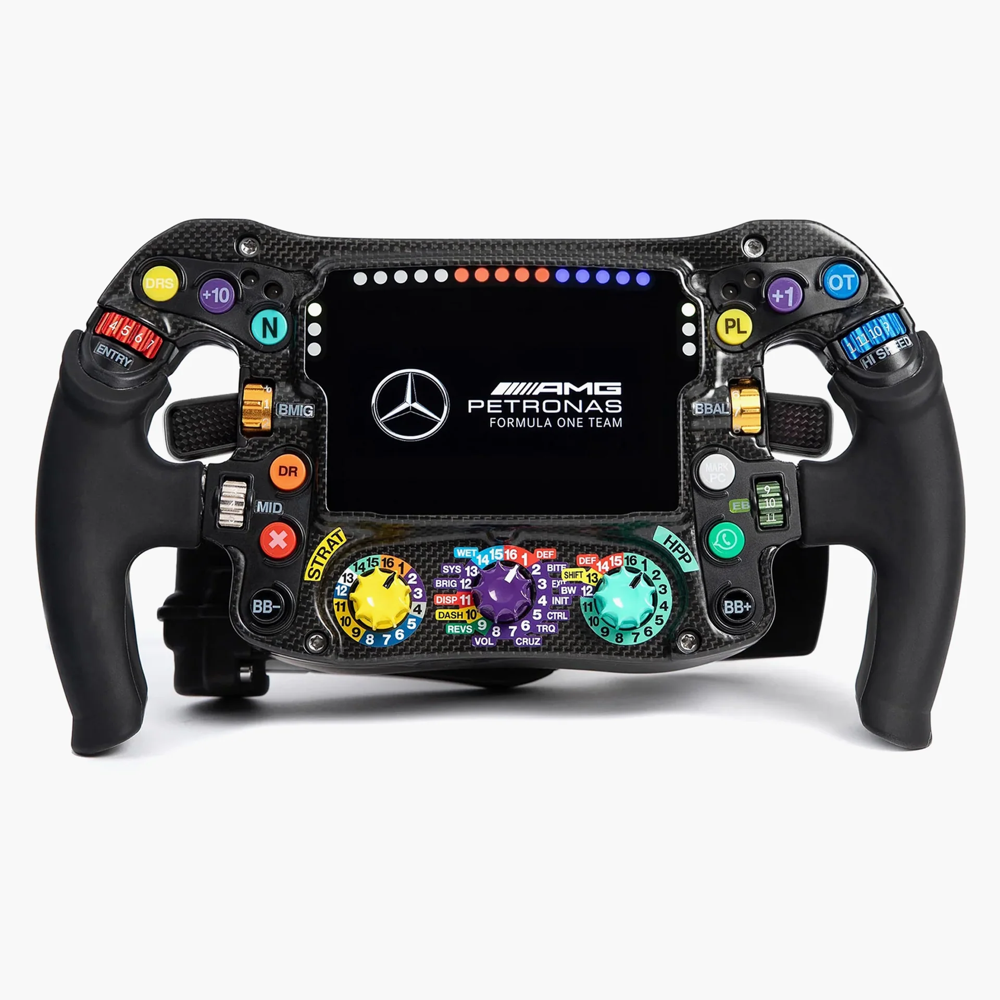
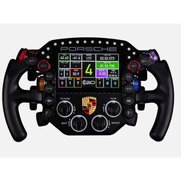
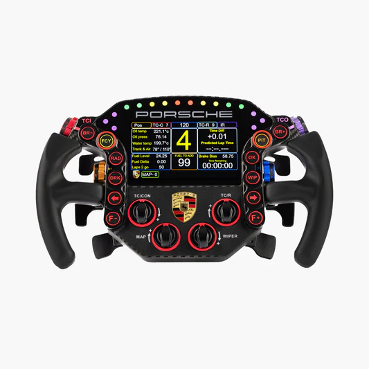

Moza KS
Moza KS
Volante tipo GT/Fórmula de 300mm fabricado en fibra de carbono reforzada.
Volante tipo GT/Fórmula de 300mm fabricado en fibra de carbono reforzada.

Volante de alta gama con pantalla integrada para telemetría en tiempo real.

Volante circular de cuero para máxima versatilidad en GT y Drift.

Réplica exacta del volante real de competición utilizado en el BMW M4 GT3.

El volante más popular de Fanatec, réplica oficial del McLaren 720S GT3.

Compacto y robusto, ideal para monoplazas con levas magnéticas de fibra de carbono.

Diseño enfocado a la máxima rigidez y respuesta táctil para pilotos profesionales.

Ergonomía avanzada con botones retroiluminados y materiales premium.

Fiel reproducción del volante utilizado en la Porsche Supercup.